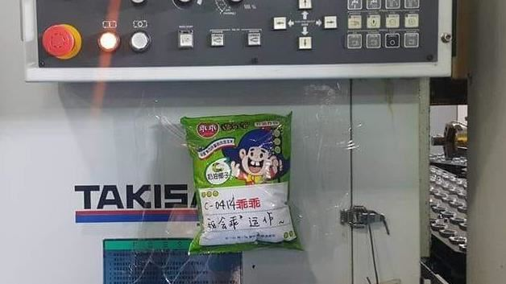

No.08 | 2023.07.31 出刊
都市傳說？「乖乖」零食為台灣科技業的護身符，機器不故障當機的小秘密～
獨特的乖乖文化究竟是什麼？又從哪來呢？讓我們一探究竟!
擺放乖乖零食有一定的講究,乖乖的外包裝一定得是綠色(奶油椰子口味),不能是黃色或紅色,因為機器順利運轉時的燈號通常是綠色,而當機械亮黃燈和紅燈時則代表故障或有異常，甚至曾經公部門擺放黃色乖乖被立委呼籲得要注意民間習俗的趣事呢～
「乖乖」為乖乖股份有限公司生產的一款玉米膨化產品。最早出現乖乖文化大概可以追溯於2008年的報導記錄「將乖乖牌零食放置在機械設備旁以祈設備乖乖運轉」,甚至2021年時還被英國BBC所報導，此觀念成為臺灣資訊業的不成文的規矩更逐漸擴展到其他領域。
香醇濃郁的椰奶,造就甜而不膩經典好滋味
台灣科技業不可或缺的護身符，保佑了台灣經濟的重要角色，機器上的綠色乖乖不可以吃喔，不然就倒大楣了！
海味鮮蝦與香濃花生醬,搭出絕妙五香風味。
雖然相當美味，但是在機器上放置的話，機器很可能會故障喔，小心不要招致慘劇。
台灣的知名食品公司,同時也是其製造的膨化玉米點心名稱。自1969年就發售了乖乖產品,正式以「乖乖」為公司名是在1974年。